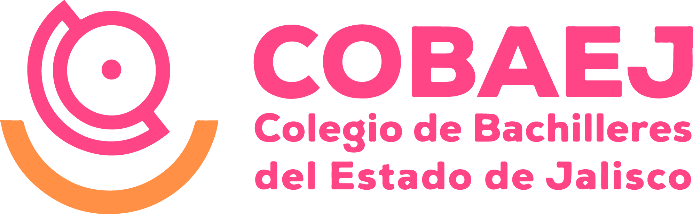
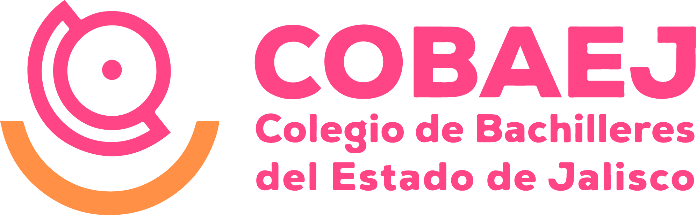

Fomento a la Convivencia y Participación Cívica en el Colegio de Bachilleres
En el Colegio de Bachilleres, las actividades cívicas forman una parte fundamental de la vida estudiantil, desarrollándose a lo largo de cada ciclo escolar y respondiendo a diversos contextos sociales, culturales y formativos. Un claro ejemplo de ello tuvo lugar el pasado 14 de marzo de 2025, cuando se llevó a cabo una jornada especial dedicada a la integración y participación de toda la comunidad estudiantil.
Durante esta jornada, se organizaron múltiples actividades con el objetivo de fortalecer los lazos de convivencia entre los alumnos de todos los grados. Se promovieron dinámicas recreativas que incluyeron juegos de mesa, competencias deportivas como fútbol y baloncesto, así como espacios para la expresión artística a través de la pintura y la poesía. Estas actividades no solo fomentaron la colaboración y el compañerismo, sino que también buscaron contrarrestar el creciente sedentarismo tecnológico que afecta a gran parte de la juventud en la actualidad.
Con iniciativas como esta, el Colegio de Bachilleres reafirma su compromiso con la formación integral de sus estudiantes, impulsando espacios que favorecen tanto el desarrollo físico como emocional y social, en un entorno saludable y participativo.
 
